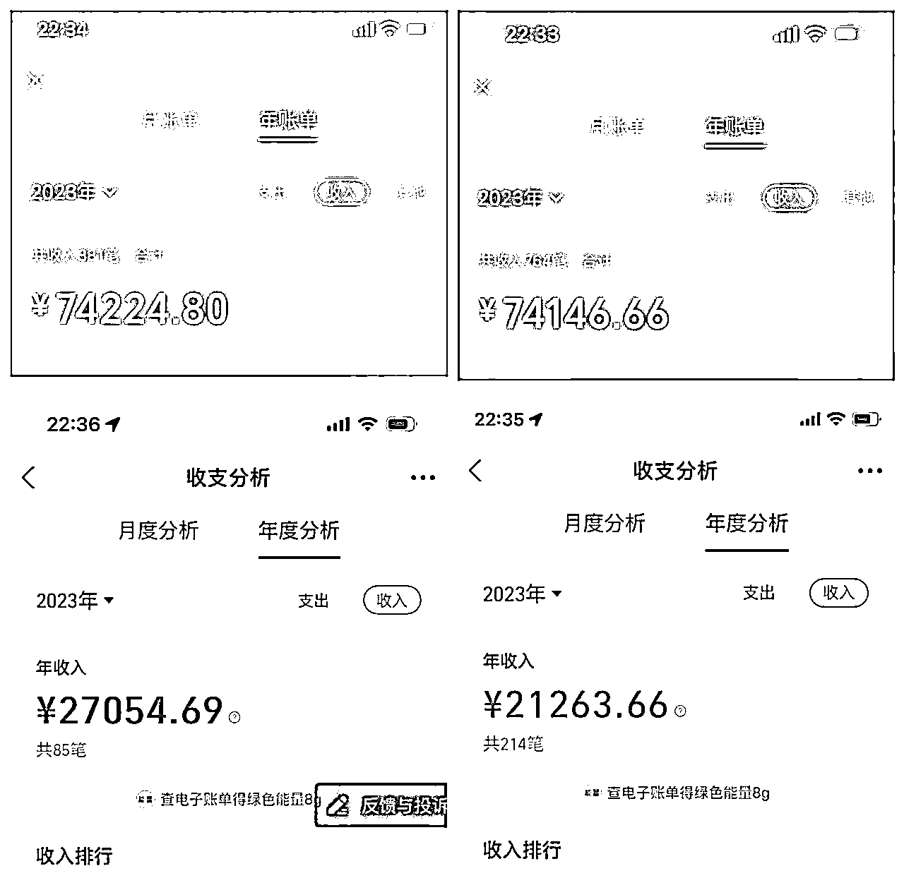
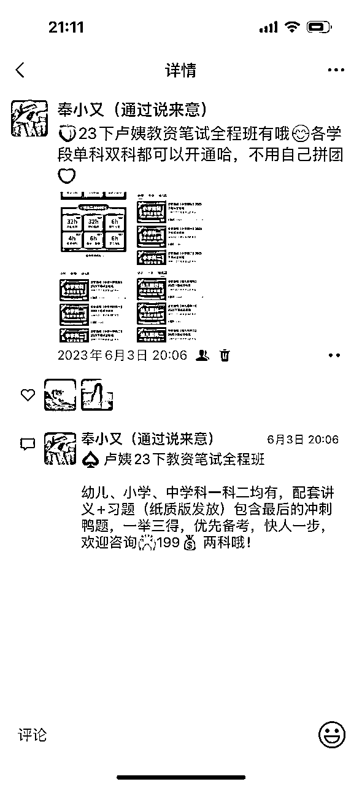
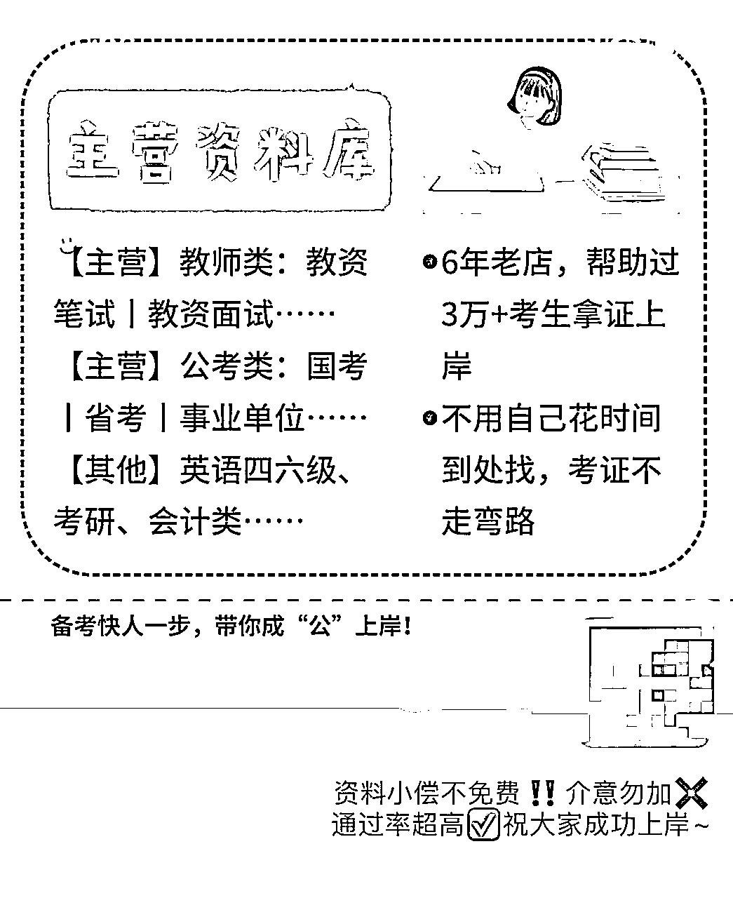

来源：https://jvx6nnxr4va.feishu.cn/docx/Wb9ld7jf3ocDisx3jrmcYtXKnvd
大家好，我是小又。
裸辞全职做自媒体一年多，2023年营收19.67w，除去一些合作伙伴的分销返点，再加上银行卡提现的几千块团购收入，实际收入大概在18w左右。
我今年的自媒体收入大多都花在装修上了，不过我们家是小户型，装修倒是也没花多少钱，就十几万，所以我今年赚的钱也差不多刚够装修。
我平时用于收款的账号有四个，两个微信两个支付宝

我这个收入比起其他大佬真的是很少了，但跟自己之前打工的时候比，还是好很多，算下来每个月也有1.5w，我离职前最后一份工作月收入到手4500，而这一年，我不但自己创业，还兼顾了孩子，真的实现了“左手育儿，右手事业”的目标，真的很感谢自媒体带给我的一切。
这里面的收入大头就是我自媒体的起步项目——虚拟学习资料。
我为什么坚持做这个项目呢？有几个原因，我之前也有在朋友圈跟大家分享过：
第一，资料项目是目前我接触的所有项目中唯一一个全方位快速锻炼一个人的自媒体能力的项目，这个项目包含了各平台的运营、引流，朋友圈打造，ip打造，以及产品宣发、销售等等 ，可以说你搞定了资料项目，那么你之后去做自媒体的任何赛道都不会很难。
第二，它能直接给你解决产品问题，很多同学想做自媒体，也学了一些平台运营和引流技能，但是由于没有可以承接流量的变现产品，往往只涨数据无法变现。
这也是我最初遇到的问题，空有几千粉变现不到一千，但是做了资料项目以后，一个600多粉的公众号就变现了一万多。
我做这个项目其实一开始心里挺没底的，熟悉我的朋友都知道，资料项目我主要是做教资赛道的，但其实我不是师范专业，我也没考过教资，但这个项目我做到了专业到能去带教资笔试陪考，还带了两批考生共15人上岸，因为这个交付太重，每次不敢收超过10人。
那我是怎么做到的呢？
当然，做资料项目前期我不建议大家都奔着专业的陪考服务去做，我也是做了几个月遇到了卡点才出的陪考服务。
如果你是小白，也跟我一样没考过什么证书，想做资料项目的话，按我今天分享的方法去走，基本上七天可以上手。
我和我的学员用的都是这个方法。
第一天，快速熟悉资料团队的规则
做资料项目都会加入资料团队，这个大家都知道，我们要快速熟悉资料所在的位置，有些团队有代更新服务，我们还要熟悉代更新流程，下单流程，题库开通流程等等。
每个团队都会有管理员，每个管理员的分工也不同，要快速了解每个管理员的职责，方便你之后有什么问题可以快速找到帮你解决的人。
第二天，装修一下你的朋友圈
如果你是做教资的，就发一些教资相关的内容，比如资料截图，课程截图之类的，每天发个三四条。不要觉得没有人看就不发了，你之后引流来顾客了，点进你朋友圈啥也没有，人家怎么信任你进而下单呢？
如图：

朋友圈的封面也把你的主营业务加上去，还有你的昵称简介都改改，比如：教资学姐、安小小专注教资，简介就是资料齐全欢迎咨询之类的。
如图：

加入网盘资料团队的，可以去云群里看看有哪些资料是可以提高你的专业度的，迅速浏览一遍。比如教资，公共课自己每个章节挑一两个视频看看，熟悉老师的讲课特点，之后跟顾客推荐的时候会更专业更有底气。
然后再去知乎搜备考干货贴，看个十篇八篇的，你就知道这个考试的重点是什么以及怎么复习了，顺带你还可以看看同行是怎么做的。
第三天，组合打包几个产品，思考怎么组合最合理（可以参考同行）。
同行是最好的老师，去小红书、公众号搜教资笔试或者教资面试，再不行就搜教资作文教资结构化什么的，去看看同行是怎么引流的，用你不做项目的号去加一下同行，看他们是怎么转化你的，观察一下他们的话术、产品、朋友圈都是怎么弄的。
每天加两三个同行，你就大概知道你要卖什么产品了。
在哪个平台引流就注册哪个平台的号，基础信息设置好，然后产出内容。
比如第一天注册小红书账号，把昵称、简介、头像设置好，然后养号，多刷同行。
第二天注册公众号，名称、简介、头像、菜单栏都弄好，然后写一篇人设文，告诉人家你是谁，你做这个公众号是干嘛的，文末送点资料啥的就行了。
第三天根据你前面收集的信息，做一个月度更选题表，每天发什么内容都安排好。再去注册一个微博，去各大考试超话去看看别人是怎么发布内容的。
第四天小红书号基本也养得差不多了，就可以开始全面输出了，小红书、公众号、微博同时开工，小红书和公众号基本可以用同一个内容，稍微改改就行，微博就更简单了，大家可以自己去看看，发一条微博不到一分钟。
内容不会写可以参考同行，先模仿，再输出自己的东西。比如去知乎查各种教资上岸经验贴，了解教资考试科目有哪些，大概内容，难易程度等。
把这些文章好好看一遍，然后整理成你自己的东西，再发出去就可以了。
提个醒，不要去找大博主，他们不靠卖资料赚钱，资料只是他们用来引流的，他们的变现方式跟我们不一样，前期建议找几百粉一两千粉的小博主去学习。
我们前面说了，同行是最好的老师，按照你自己组合的产品，多找几个同行问问价，取个平均值，你对自己有信心的话，比平均值高一点也行，然后确定一个核心产品，朋友圈就主推这个产品。
你的核心产品价格一定不能太低，要把核心产品吃透，比如差不多的产品同行卖128，你卖159，你可以附加哪些服务，你专做这一个产品都能赚不少。
比如教资这块你可以主推卢姨的课，这个真的很好出单，全程班卖一个利润是80，急救班卖一个利润二十块，你还可以自己做一些资源整合，然后去主推你这个产品就可以了。
做这个项目就是引流+转化，所以前期会比较枯燥，因为你对这个项目不熟悉，要花一点时间去学习，学习期总是会难熬一些，坚持下去就能做成。
我自己也是这么一步步走过来的，一开始也很懵，成交了第一单以后就顺利很多了。
感谢大家看到这里，下一篇给大家分享：做资料项目如何都是旺季。